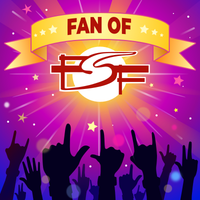

Sample Post
Published on 2月 05, 2020 by GeoZhao.
This is in Italic and this is bold and this is how underlined looks. We
can also use verbatim or code. Use strikethrough if
needed.1, 2
HTML snippet:
<html> <h1></h1> </html>
Python snippet with line numbers:
1: from contextlib import contextmanager 2: 3: @contextmanager 4: def tag(name): 5: print("<%s>" % name) 6: yield 7: print("</%s>" % name) 8: 9: with tag("h1"): 10: print("foo")
Emacs Lisp snippet
(message "foo-bar")
Github Gist:
Gitlab Snippet
Below is the content of .gitlab-ci.yml:
image: iquiw/alpine-emacs
.build: &build
script:
- emacs --batch --no-init-file --load publish.el --funcall org-publish-all
artifacts:
paths:
- public
pages:
<<: *build
only:
- master
test:
<<: *build
except:
- master
Center aligned image with no border:

Image with Black border:
Image with spaced border:
Image with rounded corners:
Image with rounded corners and border:
Image with Caption:
Figure 1: Fan of FSF
Image with 40% width:
Footnotes: 1 Visit The Org Manual for more detail. 2 It’s easy to publish org-mode pages via GitLab CI and Pages.  Copyright © 2022 Geo Zhao. Last updated on 8 月 19, 2022. Generated using Emacs 27.1 (Org mode 9.4.6).
Table:
| Specs | |
|---|---|
| Brand | Vostok |
| Class | Amphibia |
| Model | 670927 |
| Movement | 2415 |
| Winding | Manual + Automatic |
| Jewels | 31 |
| Power reserve | < 33 hrs. |
| WR | 20 ATM |
| Dial | 41mm |
| Lug width | 20mm |
| Strap material | Silicon |
| Dial material | Steel |
| Dial shape | Round |
| Bezel | (smooth)Rotating |
Footnotes:
1
Visit The Org Manual for more detail.